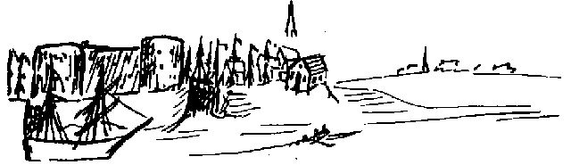

Letters of Frederick Engels
Source: MECW Volume 2, p. 498
Written: 9 July 1840
First published: in Marx/Engels, Gesamtausgabe, Abt. 1, Bd. 2, 1930
Dear Marie,
Things will soon be too bad with you; you were going to write to me as soon as you arrived in Mannheim, and now I have been sitting here three weeks already and still no letter from you. If that goes on I shall have to make up my mind to write direct to Fräulein Jung so that you will be more or less made to prove your sisterly love for me.
I hope you are having better weather than we are, nothing but storm and rain, as in September and November. At sea ships are going down like flies which drop into a glass of water, and the Norderney steamer was barely able to get there. The day before yesterday I was in Bremerhaven, and there also it rained all morning. I was on the ships which take emigrants to America; they lie all together in the steerage, which is a large space as wide and long as the whole ship, the berths (that is what the beds are called) in sets of six side by side, and above them another six. There they all lie, men, women and children, and how horrible this stuffy place is, where there are often 200 people lying, especially during the first days of seasickness, you can well imagine. The air is in any case suffocating. Cabin passengers are better off, however, they have more room and a very elegantly furnished cabin. But when a storm breaks and the waves come over the ship, they are worse off; for the cabin has a glass skylight through which the light comes in; and when it is hit by a heavy wave, the glass comes ringing most politely into the cabin and the water after it. Then the whole cabin generally gets full of water, but the beds are so high that they remain dry. Just as we were leaving again at midday a great three-master called Marie, like you, and coming from the island of Cuba, sailed into the roads. Because of the low tide it could not enter the port and anchored in the roads. We went close to it in our steamer, and took off the captain; but there were already beginning to be waves in the roads, and the ship pitched a little. At once all the ladies grew pale and made faces as if they were going to be drowned; we had a couple of pretty tailor’s daughters on board to whom we behaved extremely gallantly, and with the straightest face in the world I made the geese believe the rolling and pitching would go on as far as Brake, which we were to reach only in an hour and a half. Unfortunately, however, it stopped again directly after Bremerhaven. Three unripe hats blew off into the water and were probably carried away to America, as well as a whole lot of empty wine and beer bottles. Apart from that I did not see much that was remarkable except a dead cat in the Weser which was making a voyage to the United States all on its own. I spoke to it, but it was rude enough not to reply.

Here you have a hasty sketch of Bremerhaven. On the left is the fort which guards the harbour, an old brick-built thing which the wind will soon blow over; next the locks through which ships are let into the harbour, which is a long narrow canal a little wider than the Wupper; behind that is the town, and farther to the right the Geest, a kind of river, and the church spire above it in the air, that is the church which has yet to be built. On the right in the distance is Geestendorf.
A few days ago I made the acquaintance of a man whose father is a Frenchman born in America, his mother a German, he himself was born at sea and his native tongue, since he lives in Mexico, is Spanish. So what is his Fatherland?
We now have a complete stock of beer in the office; under the table, behind the stove, behind the cupboard, everywhere are beer bottles, and when the Old Man [Heinrich Leupold] is thirsty he borrows one and has it filled up again for us later. That is now done quite openly, the glasses stand on the table all day and a bottle nearby. In the right-hand corner are the empty bottles, in the left the full ones, next to them my cigars. It is really true, Marie, the young people are getting worse and worse every day, as Dr. Hantschke says; who would have thought 20 or 30 years ago of such terrible wickedness as drinking beer in the office?
What is most convenient for you, shall I pay the postage for our correspondence and frank my letters and also pay for yours, which you will then send unfranked? If you have already written before this letter arrives, I shall not write to you again until you write me a sensible, long letter in reply to this one.
Adieu.
With true love,
Your brother
Friedrich
Bremen, July 7, 40
Fortunately, this letter has again been left lying around and thus gives me the opportunity to reply to your letter, which has just arrived. “I wish I too could play as well as she does! If I practise very hard, I shall get that far too?” You? Play a sonata of 20 pages? Goose that you are! Schornstein would, of course, be pleased. What wishes have I for Christmas? I have lost my cigar case, and if I don’t find it soon, can you make a new one for me? Thank Ada [Adeline Engels] for her greetings and greet her heartily from me; tell her she is the first to call me amiable, and I am not at all a cousin, but at most her very respectful kinsman. — When you write again, don’t address the letter to Treviranus, as I then get it later, but to F. E., Bremen, Martini No. 11. Then it will be brought to me in the office.
Farewell.
Yours,
Friedrich
Bremen, July 9, 1840